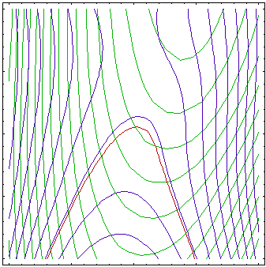
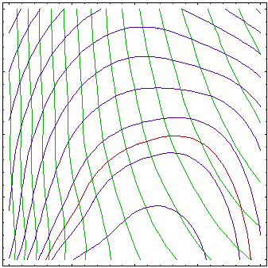
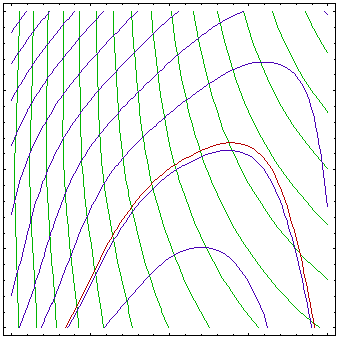

This page provides some information about IOptLib (the Investigative Optimization Library), used to support development of engineering optimization and inverse analysis software.
IOptLib (the Investigative Optimization Library) is an optimization library for developing and testing algorithms for solving engineering optimization problems. A priority goal is to develop algorithms suited to problems with computationally expensive and possibly noisy evaluation of the response (i.e. objective and constraint) functions. The library is intended to provide modular building blocks for constructing such algorithms, standardized templates for interfacing tools obtained form other libraries, and testing environment where different performance aspects of algorithms can be readily extensively tested during and after the development stage. Currently most of the efforts are devoted to algorithms based on successive solution of approximated problems obtained by local sampling and approximation of the response functions. Such algorithms have complex designs and involve solution of many sub-problems such as non-linear or quadratic programming problems, matrix algebra, optimal sampling strategies, etc. The intention is therefore to gradually accumulate efficient routines for solving these problems, which will lead to broader serviceability of the library. Any attempt was made to keep open the possibility of starting development of new algorithms or attaching to the existent functionality at any level. The basic library is therefore intended to be distributed as free open source under certain conditions. A couple of algorithms will be available under different negotiable terms since this is necessary to provide the funding for library development, however their building blocks together with a set of quite useful algorithms will be provided with the basic set that is more open what concerns availability.
The original motivation for the library was obtained in optimization of forming processes where evaluation of objective and constraint functions typically involves complex numerical simulation with hundreds of thousands of degrees of freedom, very non-linear and path dependent materials, multi-physics and multi-scale phenomena etc. As result, not only the calculation of the objective and constraint functions takes very long times even on the fastest computers or parallel architectures, but these functions often contain substantial amount of numerical noise. These conditions impose a substantial turn in how algorithm performance is viewed. On one hand the most important measure of algorithm efficiency becomes the number of function evaluations it takes for calculating optimum up to a given accuracy. The CPU time spent by the algorithm becomes somehow less important because function evaluations will normally require incomparably more computational time. Because running optimization procedures will often be just on the limit of affordable, the goal will not always be to find an optimal solution up to a specified accuracy, but rather to achieve significant improvement within affordable computational time.
The targeted scope of the library is beyond the area of its original motivation. It is intended to provide a pool of algorithms for different problems and facilities for extending this pool. Beside that, interaction with other libraries and use of the library in existing or future software is accounted for as much as possible. A lot of stress is put on defining standard data types and function prototypes used for different purposes, such as evaluation of response functions and their derivatives or for storing results of such evaluation and their use in building approximations. These standards are defined in such a way that routines for similar tasks from other libraries can be easily incorporated in the system, and functions that are consistent with library standards can be easily exported in standard forms required in other software environments. Wrapping functions and data converters are provided for some common cases, and the way how one can create own tools for this is being documented in manuals. The standards are designed in such a way that they are suitable for any environment, in particular to allow recursive calls and work in multi-threaded environment.
The library comes with a set of basic utilities that are extensively used in implementation of basic building blocks and algorithms. This includes e.g. basic matrix and vector operations and generic implementation of data containers such as stacks. These utilities are well documented in source code while overview is given in documentation.
Many of elementary utilities make use of other free libraries. Contribution of people who designed these libraries and made them available is gratefully acknowledged.
The library has been released experimentally June 2008. It was initially planned that the library would be incorporated in the optimization software Inverse as its base library. However, this development did not continue after 2007, but the software still uses numerous routines from the library. The library was released publicly in order to promote the exchange of ideas between researchers working on similar problems in optimization. Since 2007, the development has migrated completely to a more general purpose IGLib.NET framework library, which is actively developed and is based mainly on the .NET platform. A large portion of optimization algorithms and utilities has been transferred to that platform (some of it still in the sandbox section), or it is planned to be transferred.
IOptLib User's Manual. This manual is mainly intended for users of the library and its developers.
Simplex algorithms for nonlinear constraint optimization problems. This document contains description of a set of modified Nelder-Mead simplex algorithms that can be used for constraint nonlinear optimization. These algorithms can be used for solving engineering optimization problems when gradients of the objective and constraint functions are not available or these functions are not smooth. The described algorithms are implemented in IOptLib.
See also:

This figure represents convergence of an algorithm based on successive approximation of the response functions. Contours of actual objective and constraint function are shown in pale colors while contours of approximated functions are plotted in stronger colors. Zero constraint contours (actual and approximated) are plotted with thicker lines. Small points are the sampling points where the response functions (loaded with some level of noise) were calculated, and larger points are the solutions of the approximated problems.
  
The figures above shows approximations of the objective (green contours) and constraint functions (blue contours, brown 0 contour) after 1, 3, 6 and 10 iterations of an algorithm based on successive approximations. First, the approximations are very rough, with better approximation around the initial point. Over iterations, center of the approximated region moves towards optimum (see Figure above) and approximation gets better around the optimum while region far from optimum is not of interest and is not well approximated.
|
|
|
Maintained by Igor
Grešovnik
|
|
|